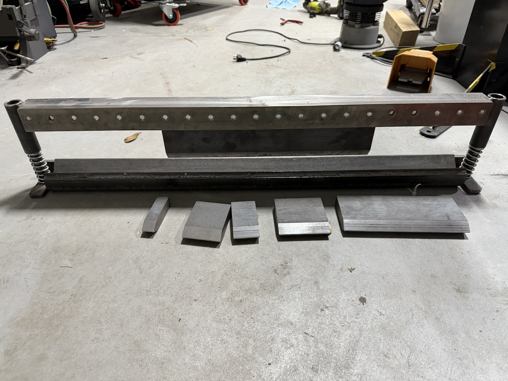
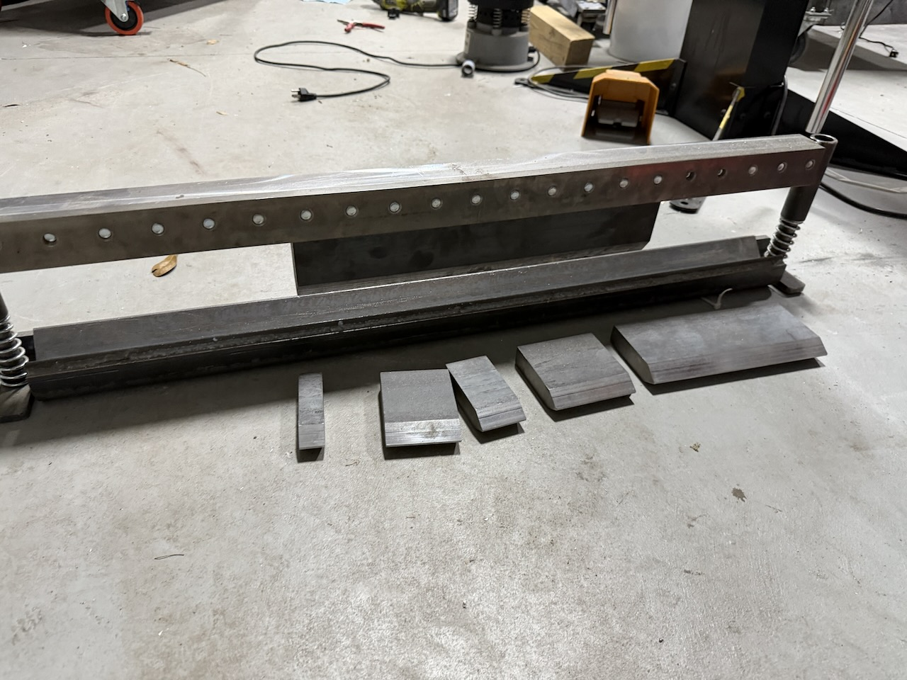

SWAG Off Road 40” Finger Press Brake DIY Builder Kit
$575


Description
Up for sale is a SWAG Off Road 40” Finger Press Brake DIY Builder Kit in excellent condition — one of the most popular and well-regarded press brake kits available for shop-built hydraulic presses. Constructed from high-strength 3/8” steel with a 1” × 4” thick top die and 3” wide bottom V-die. Capable of bending up to 37.5” wide and up to 1/4” A36 steel with adequate tonnage.
Designed to fit any hydraulic press at least 40” wide between vertical uprights — pairs perfectly with a 40–50 ton press. If you have a press and a welder, this is the brake you want.
Note: This is a DIY builder kit — final assembly requires welding.
Specifications
| Manufacturer | SWAG Off Road (Made in USA) |
| Model | 40” Finger Press Brake DIY Builder Kit |
| Construction | High-strength 3/8” steel |
| Top die | 1” × 4” thick |
| Bottom V-die | 3” wide |
| Max bending width | 37.5” |
| Max material (A36) | 1/4” with adequate tonnage |
| Segmented fingers | 1”, 2”, 3”, 4”, 9.5”, 17” |
| Press clearance required | 40” minimum between uprights |
| Recommended press | 40–50 ton hydraulic press |
| Assembly | DIY builder kit — welding required |
| Condition | Excellent |
What’s Included
- ✓ Top die — 1” × 4” thick
- ✓ Bottom V-die — 3” wide
- ✓ Segmented fingers — 1”, 2”, 3”, 4”, 9.5”, and 17” lengths
- ✓ Adjustable backstop
Local pickup only. We have a tractor with forks available to assist with loading at your direction. See our Pickup & Loading page for full details.
Get Contact & Pickup Info
Complete the short form below to receive our contact information and pickup address.